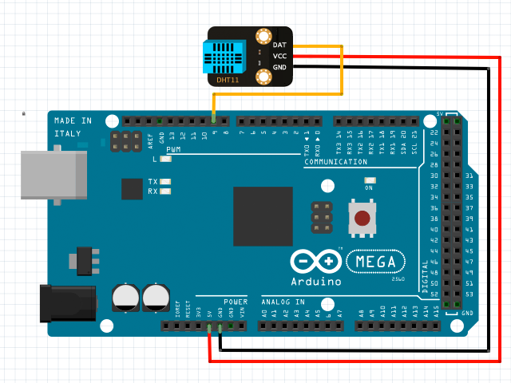

var thermometer1 = new Thermometer();
// set up a thermometer
thermometer1.setup(
1, // unit 1
9, // pin 9
ThermometerModel.DHT11 // model
);
// measure the temperature and humidity
thermometer1.whenGetValue = function(temperature, humidity) {
document.getElementById("status").innerHTML = "temperature: " + temperature + "°C " + "humidity: " + humidity + "%";
};
thermometer1.getValue();
Call function getValue() to measure the temperature and humidity.
The measured value in degrees Celsius and percentage will be obtained in callback whenGetValue().
Thermometer
setup(unit, pin, model)
initialize a thermometer object with a specified pin on a specified unit.
optional parameter model can be set to ThermometerModel.DHT11 or ThermometerModel.DHT22, DHT11 is the default model.
return value: true if successful, otherwise false.
getValue()
request to measure temperature and humidity, an event callback whenGetValue() will be received later.
return value: an associative array with two keys, temperature and humidity.
Return Value Note:
The function will return a value when your h5control program uses waitRsp mode, but no return value when uses nowaitRsp mode.
whenSetup(done)
receive the callback when setup done. parameter done is true if successful or false otherwise.
whenGetValue(temperature, humidity)
receive the callback to get the measured temperature and the humidity after called function getValue().
ThermometerModel
ThermometerModel.DHT11
uses model DHT11
ThermometerModel.DHT22
uses model DHT21, DHT22, DHT33 or DHT44